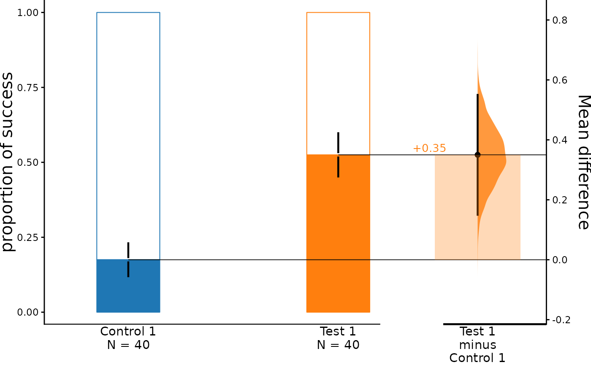
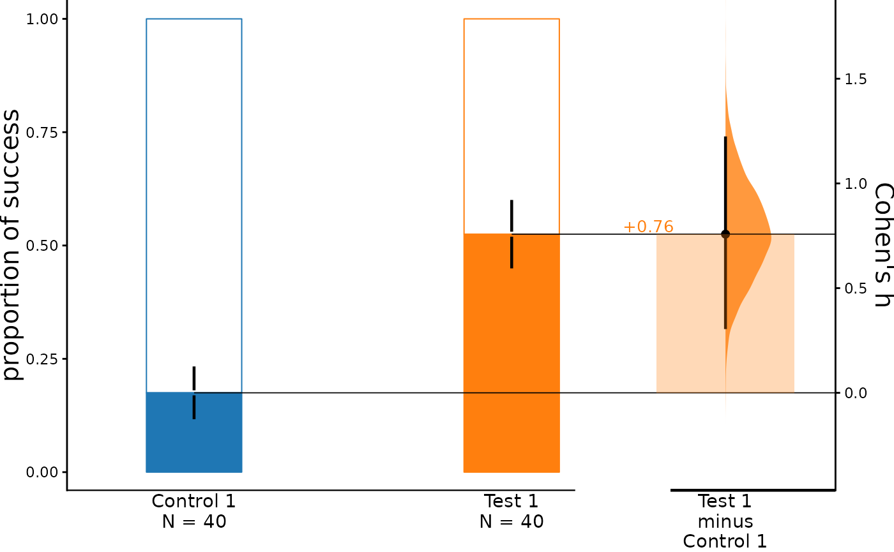
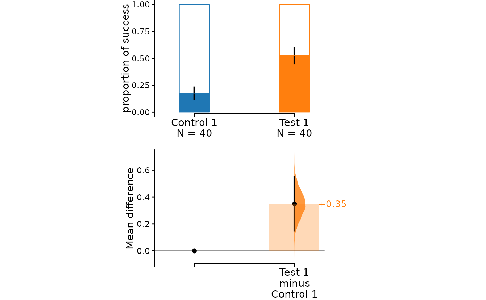
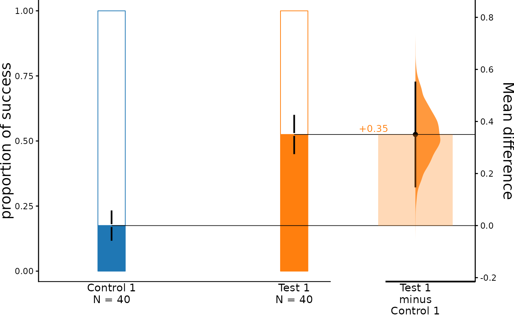
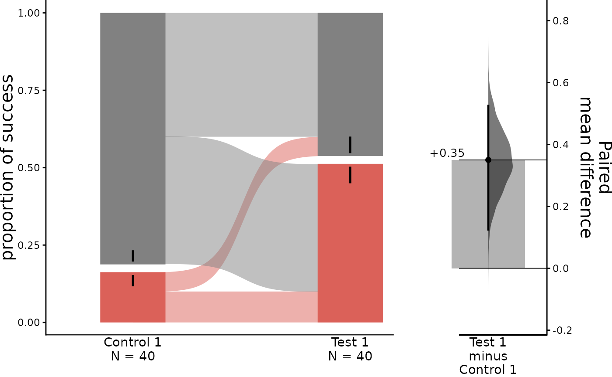
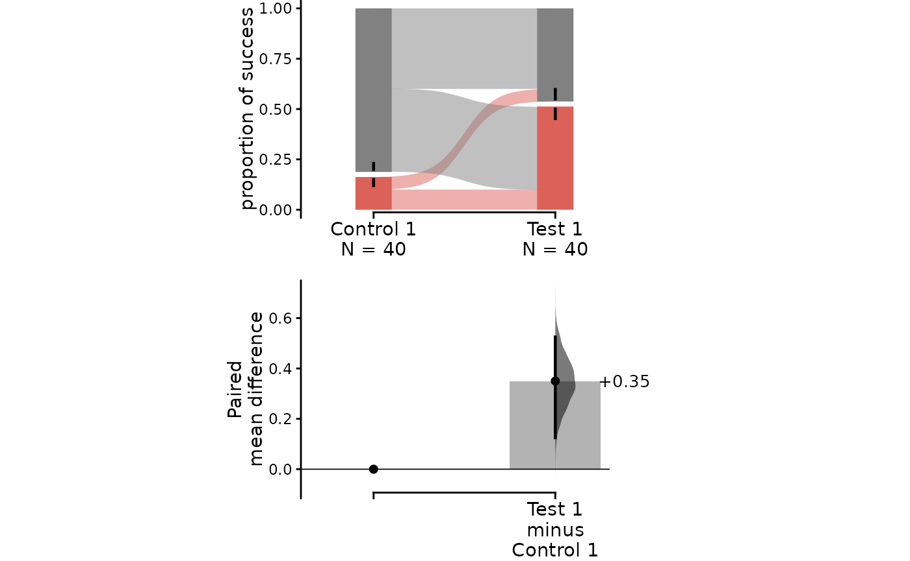
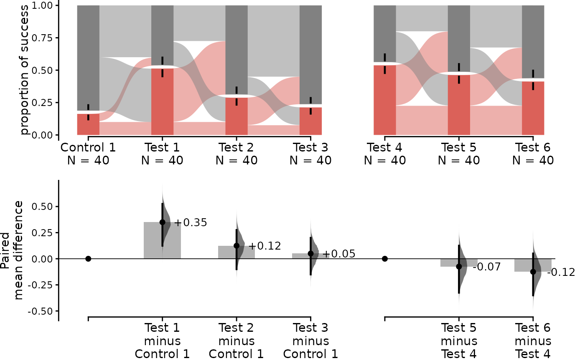
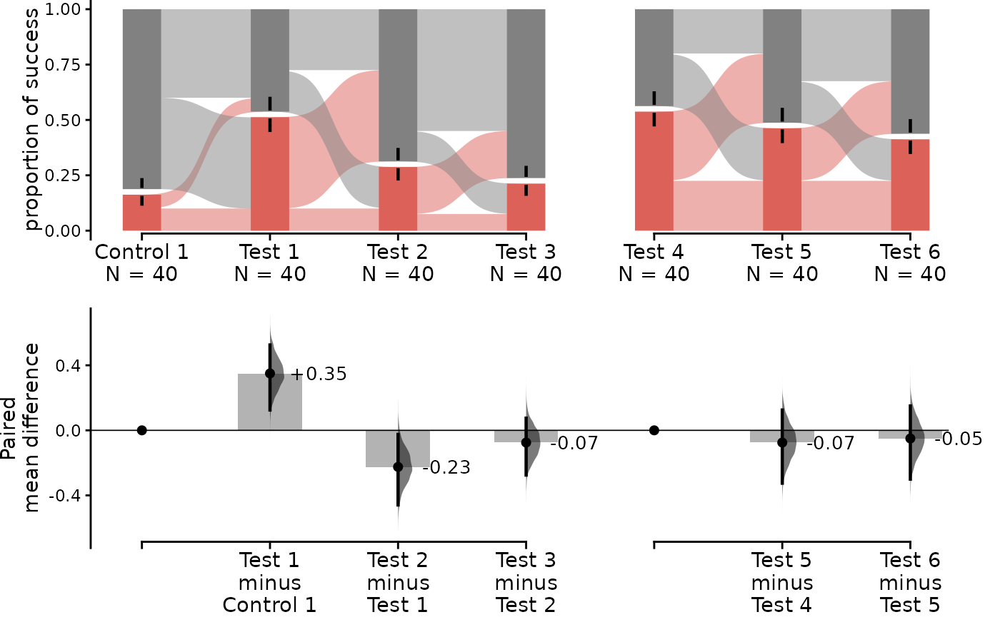
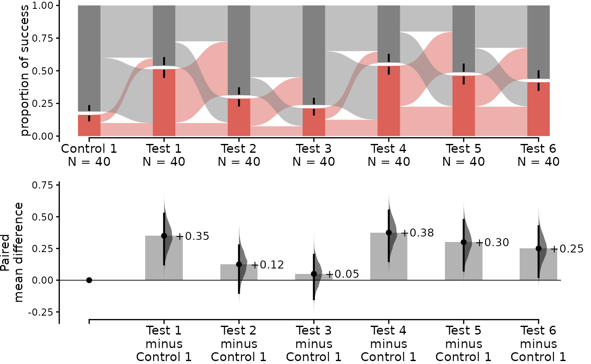
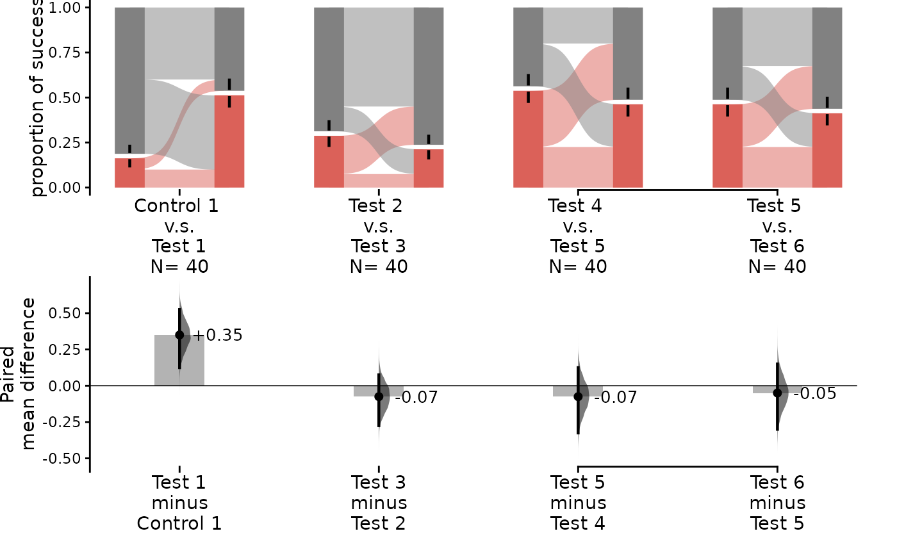

Tutorial: Proportion Plots
Source:vignettes/tutorial_proportion_plots.Rmd
tutorial_proportion_plots.RmdThis vignette documents how dabestr is able to generate
proportion plots for binary data.
It’s important to note that the code we provide only supports numerical proportion data, where the values are limited to 0 (failure) and 1 (success). This means that the code is not suitable for analyzing proportion data that contains non-numeric values, such as strings like ‘yes’ and ‘no’.
Create dataset for demo
set.seed(12345) # Fix the seed so the results are replicable.
N <- 40 # The number of samples taken from each population
# Create samples
size <- 1
c1 <- rbinom(N, size, prob = 0.2)
c2 <- rbinom(N, size, prob = 0.2)
c3 <- rbinom(N, size, prob = 0.8)
t1 <- rbinom(N, size, prob = 0.35)
t2 <- rbinom(N, size, prob = 0.2)
t3 <- rbinom(N, size, prob = 0.3)
t4 <- rbinom(N, size, prob = 0.4)
t5 <- rbinom(N, size, prob = 0.5)
t6 <- rbinom(N, size, prob = 0.6)
t7 <- c(rep(1, N))
# Add a `gender` column for coloring the data.
gender <- c(rep("Male", N / 2), rep("Female", N / 2))
# Add an `id` column for paired data plotting.
id <- 1:N
# Combine samples and gender into a DataFrame.
df <- tibble::tibble(
`Control 1` = c1, `Control 2` = c2, `Control 3` = c3,
`Test 1` = t1, `Test 2` = t2, `Test 3` = t3, `Test 4` = t4, `Test 5` = t5,
`Test 6` = t6, `Test 7` = t7,
Gender = gender, ID = id
)
df <- df %>%
tidyr::gather(key = Group, value = Success, -ID, -Gender)| Gender | ID | Group | Success |
|---|---|---|---|
| Male | 1 | Control 1 | 0 |
| Male | 2 | Control 1 | 1 |
| Male | 3 | Control 1 | 0 |
| Male | 4 | Control 1 | 1 |
| Male | 5 | Control 1 | 0 |
| Male | 6 | Control 1 | 0 |
Loading Data
When loading data, specify proportional = TRUE.
two_groups_unpaired <- load(df,
x = Group, y = Success,
idx = c("Control 1", "Test 1"),
proportional = TRUE
)
print(two_groups_unpaired)
#> DABESTR v2023.9.12
#> ==================
#>
#> Good afternoon!
#> The current time is 15:52 PM on Tuesday September 12, 2023.
#>
#> Effect size(s) with 95% confidence intervals will be computed for:
#> 1. Test 1 minus Control 1
#>
#> 5000 resamples will be used to generate the effect size bootstraps.Effect sizes
For proportion plot, dabest features two effect sizes:
- the mean difference (
mean_diff()) - Cohen’s h (
cohens_h())
The output of the load() function, a dabest
object, is then passed into these effect_size() functions
as a parameter.
two_groups_unpaired.mean_diff <- mean_diff(two_groups_unpaired)
print(two_groups_unpaired.mean_diff)
#> DABESTR v2023.9.12
#> ==================
#>
#> Good afternoon!
#> The current time is 15:52 PM on Tuesday September 12, 2023.
#>
#> The unpaired mean difference between Test 1 and Control 1 is 0.35 [95%CI 0.15, 0.55].
#> The p-value of the two-sided permutation t-test is 0.0037, calculated for legacy purposes only.
#>
#> 5000 bootstrap samples were taken; the confidence interval is bias-corrected and accelerated.
#> Any p-value reported is the probability of observing the effect size (or greater),
#> assuming the null hypothesis of zero difference is true.
#> For each p-value, 5000 reshuffles of the control and test labels were performed.Let’s compute the Cohen’s h for our comparison.
two_groups_unpaired.cohens_h <- cohens_h(two_groups_unpaired)
print(two_groups_unpaired.cohens_h)
#> DABESTR v2023.9.12
#> ==================
#>
#> Good afternoon!
#> The current time is 15:52 PM on Tuesday September 12, 2023.
#>
#> The unpaired Cohen's h between Test 1 and Control 1 is 0.758 [95%CI 0.311, 1.217].
#> The p-value of the two-sided permutation t-test is 0.0037, calculated for legacy purposes only.
#>
#> 5000 bootstrap samples were taken; the confidence interval is bias-corrected and accelerated.
#> Any p-value reported is the probability of observing the effect size (or greater),
#> assuming the null hypothesis of zero difference is true.
#> For each p-value, 5000 reshuffles of the control and test labels were performed.Producing Unpaired Proportional Plots
To produce a Gardner-Altman estimation plot, simply
use the dabest_plot().
dabest_plot() only requires one compulsory parameter to
run: the dabest_effectsize_obj obtained from the
effect_size() function. This means you can quickly create
plots for different effect sizes easily.
dabest_plot(two_groups_unpaired.mean_diff)
dabest_plot(two_groups_unpaired.cohens_h)
The white part in the bar represents the proportion of observations in the dataset that do not belong to the category, which is equivalent to the proportion of 0 in the data. The colored part, on the other hand, represents the proportion of observations that belong to the category, which is equivalent to the proportion of 1 in the data. The error bars in the plot display the mean and ± standard deviation of each group as gapped lines. The gap represents the mean, while the vertical ends represent the standard deviation. By default, the bootstrap effect sizes is plotted on the right axis.
Instead of a Gardner-Altman plot, you can produce a Cumming
estimation plot by setting float_contrast = FALSE
in the dabest_plot() function. This will plot the bootstrap
effect sizes below the raw data.
dabest_plot(two_groups_unpaired.mean_diff, float_contrast = FALSE)
You can also modify the width of bars as you expect by setting
raw_bar_width in the dabest_plot()
function.
dabest_plot(two_groups_unpaired.mean_diff, raw_bar_width = 0.15)
swarm_label and contrast_label can be used
to set labels for the y-axis of the bar plot and the contrast plot.
dabest_plot(two_groups_unpaired.mean_diff,
swarm_label = "success", contrast_label = "difference"
)Producing Paired Proportion Plots
For paired version of proportional plot, we adapt the style of Sankey Diagram. The width of each bar in each xticks represent the proportion of corresponding label in the group, and the strip denotes the paired relationship for each observation.
Similar to the unpaired version, the dabest_plot()
function is used to produce a Gardner-Altman estimation
plot, the only difference is that the paired
parameter is set to either “baseline” or “sequential” when loading
data.
two_groups_baseline.mean_diff <- load(df,
x = Group, y = Success,
idx = c("Control 1", "Test 1"),
proportional = TRUE,
paired = "baseline", id_col = ID
) %>%
mean_diff()
dabest_plot(two_groups_baseline.mean_diff)
The paired proportional plot also supports the
float_contrast parameter, which can be set to
FALSE to produce a Cumming estimation
plot.
dabest_plot(two_groups_baseline.mean_diff, float_contrast = FALSE)
The upper part (grey part) of the bar represents the proportion of observations in the dataset that do not belong to the category, which is equivalent to the proportion of 0 in the data. The lower part, on the other hand, represents the proportion of observations that belong to the category, which is or success, which is equivalent to the proportion of 1 in the data.
Repeated measures is also supported in paired proportional plot, by
changing the paired parameter, two types of plot can be
produced.
By default, the raw data plot (upper part) in both “baseline” and
“sequential” repeated measures are the same, the only difference is the
lower part. For detailed information about repeated measures, please
refer to vignette("tutorial_repeated_measures").
multi_group_baseline.mean_diff <- load(df,
x = Group, y = Success,
idx = list(
c(
"Control 1", "Test 1",
"Test 2", "Test 3"
),
c(
"Test 4", "Test 5",
"Test 6"
)
),
proportional = TRUE,
paired = "baseline", id_col = ID
) %>%
mean_diff()
dabest_plot(multi_group_baseline.mean_diff,
swarm_y_text = 11, contrast_y_text = 11
)
multi_group_sequential.mean_diff <- load(df,
x = Group, y = Success,
idx = list(
c(
"Control 1", "Test 1",
"Test 2", "Test 3"
),
c(
"Test 4", "Test 5",
"Test 6"
)
),
proportional = TRUE,
paired = "sequential", id_col = ID
) %>%
mean_diff()
dabest_plot(multi_group_sequential.mean_diff,
swarm_y_text = 11, contrast_y_text = 11
)
If you want to specify the order of the groups, you can use the
idx parameter in the load() function.
For all the groups to be compared together, you can put all the
groups in the idx parameter in the load()
function in a singular vector/non-nested list.
multi_group_baseline_specify.mean_diff <- load(df,
x = Group, y = Success,
idx = c(
"Control 1", "Test 1",
"Test 2", "Test 3",
"Test 4", "Test 5",
"Test 6"
),
proportional = TRUE,
paired = "baseline", id_col = ID
) %>%
mean_diff()
dabest_plot(multi_group_baseline_specify.mean_diff,
swarm_y_text = 11, contrast_y_text = 11
)
Adjustment parameters
By changing the sankey and flow parameter,
you can produce different types of paired proportional plot.
By default, the sankey and flow are set to
TRUE to cater the need for the repeated measures. When
sankey is set to FALSE, DABEST will generate a
bar plot with similar aesthetic to the paired proportional plot. When
flow is set to FALSE, each group of comparison
form a sankey diagram which does not connect to other groups of
comparison.
separate_control.mean_diff <- load(df,
x = Group, y = Success,
idx = list(
c("Control 1", "Test 1"),
c("Test 2", "Test 3"),
c("Test 4", "Test 5", "Test 6")
),
proportional = TRUE,
paired = "sequential", id_col = ID
) %>%
mean_diff()
dabest_plot(separate_control.mean_diff, swarm_y_text = 11, contrast_y_text = 11)
dabest_plot(separate_control.mean_diff,
swarm_y_text = 11, contrast_y_text = 11,
sankey = FALSE
)
dabest_plot(separate_control.mean_diff,
swarm_y_text = 11, contrast_y_text = 11,
flow = FALSE
)